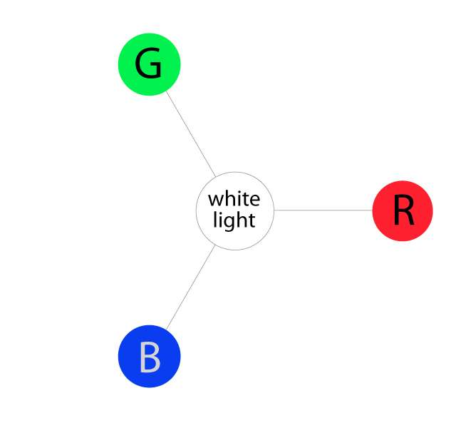
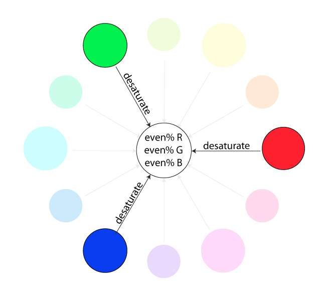
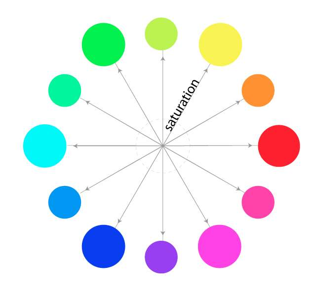
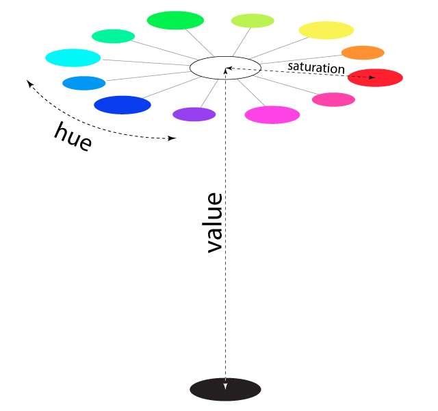
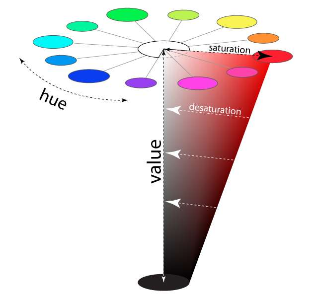
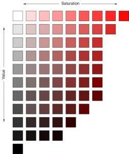

Basic Color Theory
Color theory is a term used to describe the collection of rules and guidelines regarding the use of color in art and design, as developed since their early days. Color theory informs the design of color schemes, aiming at aesthetic appeal and the effective communication of a design message on both the visual level and the psychological level. Color theory encompasses a multitude of definitions, concepts and design applications - enough to fill several encyclopedias. However, there are three basic categories of color theory that are logical and useful : The color wheel, color harmony, and the context of how colors are used.
The Basics: Understanding Color
The Color Wheel
The color wheel is all about mixing colors. A color circle, based on red, yellow and blue, is traditional in the field of art. Sir Isaac Newton developed the first circular diagram of colors in 1666. Since then, scientists and artists have studied and designed numerous variations of this concept. Differences of opinion about the validity of one format over another continue to provoke debate. In reality, any color circle or color wheel which presents a logically arranged sequence of pure hues has merit. This way of understanding color is known as an subtractive model, which involves mixing colored pigments like paints or inks — both the traditional color wheel and the CMYK color system that printing equipment uses fall into this category. That’s opposed to the additive model, which involves mixing colored light (like the colors you see on your computer screen or TV) and uses a different set of primary colors: red, green, and blue, often abbreviated RGB
Color Terms
Before we get into how to use the color wheel to create color palettes for your designs, let’s take a quick look at some color-related terms that will help you understand the different types of colors you might be using as you work on design projects:
- Hue: synonymous with “color” or the name of a specific color; traditionally refers to one of the 12 colors on the color wheel
- Shade: a hue darkened with black
- Tone: a hue dulled with gray
- Tint: a hue lightened with white
- Saturation: refers to the intensity or purity of a color (the closer a hue approaches to gray, the more desaturated it is)
- Value: refers to the lightness or darkness of a color
Color Harmony
Harmony can be defined as a pleasing arrangement of parts, whether it be music, poetry, color, or even an ice cream sundae. In visual experiences, harmony is something that is pleasing to the eye. It engages the viewer and it creates an inner sense of order, a balance in the visual experience. When something is not harmonious, it's either boring or chaotic. At one extreme is a visual experience that is so bland that the viewer is not engaged. The human brain will reject under-stimulating information. At the other extreme is a visual experience that is so overdone, so chaotic that the viewer can't stand to look at it. The human brain rejects what it cannot organize, what it cannot understand. The visual task requires that we present a logical structure. Color harmony delivers visual interest and a sense of order.
- Monochromatic: various shades, tones, or tints of one color; for instance, a range of blues varying from light to dark; this type of scheme is more subtle and conservative.
- Analogous: hues that are side by side on the color wheel; this type of scheme is versatile and easy to apply to design projects.
- Complementary: opposites on the color wheel, such as red/green or blue/orange; complementary colors are high-contrast and high-intensity, but can be difficult to apply in a balanced, harmonious way (especially in their purest form, when they can easily clash in a design).
- Split-Complementary: any color on the color wheel plus the two that flank its complement; this scheme still has strong visual contrast, but is less jarring than a complementary color combination.
- Triadic: any three colors that are evenly spaced on the color wheel.
- Tetradic/Double-Complementary: two complementary pairs; this scheme is very eye-catching, but may be even harder to apply than one pair of complementary colors, since more colors are more difficult to balance. If you use this type of scheme, you’ll want to choose one of the four to be the dominant color and adjust the saturation/value/etc. of some or all the colors so they work well in different parts of your design like the text and background.
According to colot theory, harmonious color combinations use any two colords opposite each other on the color wheel, any three colords equally spaced around the color wheel forming a triangle, or any four colors forming a rectangle(actually, two pairs colors opposite each other). The harmonious color combinations are called color schemes - sometimes the term 'color harmonies' is also used. Color schemes remain harmonious regardless of the rotation angle.
The HSV Color Scale
The scales above illustrate the value and saturation changes of a hue in the same way visually, although they explain what’s happening differently based on how pigment works vs. how light works. This is a fairly simple way of looking at it, but it still might not be completely clear. There is a more complex, 3-dimensional scale that allows us to look at how hue, saturation, and value intersect to create colors: the “HSV Scale.”
The HSV scale clearly stands for “Hue, Saturation, Value.” It does a better job at visually explaining the concept of light, and it is a very useful one to comprehend, as it is what most sophisticated digital color pickers are based on (including all Adobe software). Not only do graphic designers need to understand this color construct, but fine artists do as well since digital art and rendering has become such an integral part of art processes.
Hues
The three primary hues in light are red, green, and blue. Thus, that is why televisions, computer monitors, and other full-range, electronic color visual displays use a triad of red, green, and blue phosphors to produce all electronically communicated color.
Saturation
Saturation is also referred to as “intensity” and “chroma.” It refers to the dominance of hue in the color. On the outer edge of the hue wheel are the ‘pure’ hues. As you move into the center of the wheel, the hue we are using to describe the color dominates less and less. When you reach the center of the wheel, no hue dominates. These colors directly on the central axis are considered desaturated.
Naturally, the opposite of the image above is to saturate color. The first example below describes the general direction color must move on the color circle to become more saturated (towards the outside). The second example depicts how a single color looks completely saturated, having no other hues present in the color.
Value
Now let’s add “value” to the HSV scale. Value is the dimension of lightness/darkness. In terms of a spectral definition of color, value describes the overall intensity or strength of the light. If hue can be thought of as a dimension going around a wheel, then value is a linear axis running through the middle of the wheel, as seen below:
To better visualize even more, look at the example below showing a full color range for a single hue:
Now, if you imagine that each hue was also represented as a slice like the one above, we would have a solid, upside-down cone of colors. The example above can be considered a slice of the cone. Notice how the right-most edge of this cone slice shows the greatest amount of the dominant red hue (least amount of other competing hues), and how as you go down vertically, it gets darker in “value.” Also notice that as we travel from right to left in the cone, the hue becomes less dominant and eventually becomes completely desaturated along the vertical center of the cone. This vertical center axis of complete desaturation is referred to as grayscale. See how this slice below translates into some isolated color swatches:
